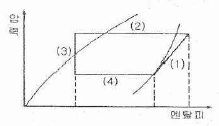
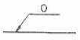
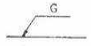
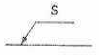
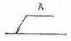
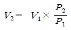
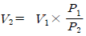
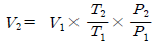
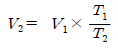

가스기능장 (2015-07-19 기출문제)
1과목: 임의 구분
1. 냉동 사이클에서 응축기가 열을 제거하는 과정을 나타내는 선은?

- ⑴
- ⑵
- ⑶
- ⑷
(정답률: 87%)

2. 다음 중 가스설비에 주로 사용되는 안전장치가 아닌 것은?
- 플레어 스택(flare stack)
- 스팀 트랩(steam trap)
- 파열판(ruoture disk)
- 가용전(fusible plug)
(정답률: 82%)
3. 30[℃], 2[atm]에서 산소 1[mol]이 차지하는 부피는 얼마인가? (단, 이상기체의 상태방정식에 따른다고 가정한다.)
- 6.2[L]
- 8.4[L]
- 12.4[L]
- 24.8[L]
(정답률: 80%)
4. PV/T가 일정하게 유지되면서 변화하는 어떤 기체가 0[℃], 1[atm]에서 2.5[m3ㆍmol-1]의 체적을 가지고 있다. 이 기체가 0[℃], 1[atm]에서 25[℃], 10[atm]으로 압축될 때 변화 후의 부피는 약 몇 [m3]이 되는가?
- 0.13[m3]
- 0.27[m3]
- 0.48[m3]
- 1.17[m3]
(정답률: 60%)
5. 다음 배관 도시기호 중 관내의 유체가 가스인 것을 나타내는 것은?




(정답률: 97%)
6. 특정 고압가스 사용 신고의 기준에 대한 설명으로 옳지 않은 것은?
- 저장능력 250[kg] 이상의 액화가스 저장 설비를 갖추고 특정고압가스를 사용하고자 하는 자
- 저장능력 30[m3] 이상의 압축가스 저장설비를 갖추고 특정고압가스를 사용하고자 하는 자
- 배관으로 특정 고압가스를 공급받아 사용하려는 자
- 액화염소를 사용하고자 하는 자
(정답률: 63%)
7. 복합재료 용기는 그 용기의 안전을 확보하기 위하여 최고 충전압력이 얼마 이하 이어야 하는가?
- 15[MPa]
- 20[MPa]
- 30[MPa]
- 35[MPa]
(정답률: 68%)
8. 가스배관에 사용되는 금속재료의 성질에 대한 설명으로 틀린 것은?
- 강재 중 인(P) 함유량이 많으면 연신률과 충격치가 증가된다.
- 압력 배관용 강관의 탄소 함유량은 0.25[%] 이하를 사용한다.
- 황동은 구리와 아연의 합금이다.
- 황은 고온에서 적열취성을 일으킬 수 있다.
(정답률: 71%)
9. 발열량 8000[kcal/Nm3], 비중이 0.61, 공급 압력이 160[mmH2O]인 가스에서 발열량 10000[kcal/Nm3], 비중 0.62, 공급압력 200[mmH2O]인 LPG로 가스를 변경할 경우의 노즐구경 변경율은 약 얼마인가?
- 0.75
- 0.85
- 1.18
- 1.28
(정답률: 52%)
10. 가스분석 시 이산화탄소(CO2)의 흡수제로 주로 사용되는 것은?
- 수산화칼륨 수용액
- 요오드화수은칼륨 용액
- 알칼리성 피로갈롤 용액
- 암모니아성 염화 제1구리 용액
(정답률: 80%)
11. 왕복형 다단 압축기의 중간단에서 토출압력이 낮아지는 원인이 아닌 것은?
- 중간단의 흡입저항 감소
- 앞단의 피스톤링 마모
- 앞단의 냉각기 과냉
- 흡입밸브 언로드의 복귀불량
(정답률: 67%)
12. 이상기체를 일정한 온도 조건하에서 상태 1에서 상태 2로 변화시켰을 때 최종 부피는 얼마인가? (단, 상태 1에서의 부피 및 압력은 V1과 P1이며, 상태 2에서의 부피와 압력은 각각 V2와 P2이다.




(정답률: 88%)
13. 가스 중의 황화수소 제거법 중 알칼리물질로 암모니아 또는 탄산소다를 사용하며, 촉매는 티오비산염을 사용하는 방법은?
- 사이록스법
- 진공카보네이트법
- 후막스법
- 타카학스법
(정답률: 87%)
14. 다음 중 가장 낮은 온도에서 사용이 가능한 보냉제는?
- 폴리우레탄
- 탄산마그네슘
- 펠트
- 폴리스틸렌
(정답률: 90%)
15. 액화산소를 저장하는 저장능력 10톤인 저장탱크 2기를 설치하려고 한다. 각각의 저장탱크 최대지름이 3[m]일 경우 저장탱크간의 최소거리는 몇 [m] 이상 유지하여야 하는가?
- 1
- 1.5
- 2
- 3
(정답률: 86%)
16. 가스화재 시 가장 효과가 높은 소화방법은?
- 제거소화
- 질식소화
- 냉각소화
- 희석소화
(정답률: 83%)
17. 발열량 24000[kcal/m3], 비중이 1.52인 프로판가스와 발열량 10000[kcal/m3], 비중 0.61인 천연가스의 웨베지수는 각각 약 얼마인가?
- 18500, 11800
- 19500, 12800
- 2⑤00, 13800
- 21500, 14800
(정답률: 84%)
18. 액화천연가스 180[ton]을 저장하는 저압지하식 저장탱크는 그 외면으로부터 사업소 경계까지 몇 [m] 이상의 안전거리를 유지하여야 하는가?
- 17
- 27
- 34
- 71
(정답률: 61%)
19. 다음 중 가연성가스이면서 독성가스로만 되어 있는 것은?
- 브롬화메탄, 산화에틸렌, 벤젠, 트리메틸아민
- 트리메틸아민, 부탄, 석탄가스, 아황산가스
- 황화수소, 염소, 포스겐, 일산화탄소
- 이황화탄소, 포스겐, 모노메틸아민, 프로판
(정답률: 78%)
20. 다음 중 암모니아의 완전연소반응식을 옳게 나타낸 것은?
- 2NH3+2O2→ N2O+3H2O
- 2NH3+1.5O2→ N2+3H2O
- NH3+2O2→ HNO3+H2O
- 4NH3+5O2→ 4NO+6H2O
(정답률: 67%)
2과목: 임의 구분
21. 액화석유가스 집단공급사업자가 갖추어야 할 수요자시설 점검원의 인원 기준은?
- 수용가 2000개소마다 1명
- 수용가 3000개소마다 1명
- 수용가 5000개소마다 1명
- 수용가 10000개소마다 1명
(정답률: 85%)
22. 초저온장치의 단열법에 대한 설명으로 틀린것은?
- 단열재는 습기가 없어야 한다.
- 온도가 낮은 기기일수록 전열에 의한 침입열이 크다.
- 단열재는 균등하게 충전하여 공동이 없도록 해야 한다.
- 단열재는 산소 또는 가연성의 것을 취급하는 장치 이외에는 불연성이 아니라도 좋다.
(정답률: 91%)
23. CH4, CO2 및 수증기(H2O)의 생성열이 각각 17.9, 94.1, 57.8[kcal/mol]이라 할 때 메탄의 연소열은 약 몇 [kcal/mol] 인가?
- 39.4
- 54.2
- 191.8
- 234.7
(정답률: 71%)
24. 다음 중 제1종 보호시설에 속하지 않는 것은?
- 학교
- 「문화재 보호법」에 따라 지정 문화재로 지정된 건축물
- 장애인 복지시설로서 10명 이상 수용할 수 있는 건축물
- 어린이 놀이터
(정답률: 86%)
25. 내부용적이 24000[L]인 액화산소 저장탱크의 저장능력은 몇 [kg] 인가? (단, 비중은 1.14로 한다.)
- 24624
- 24780
- 25650
- 27520
(정답률: 72%)
26. 산소 가스압축기의 윤활제로 기름 사용을 금하고 있는 가장 큰 이유는?
- 한 번도 사용한 적이 없으므로
- 산소가스의 순도가 낮아지므로
- 식품과 접촉하면 위험하기 때문에
- 마찰로 실린더 내의 온도가 상승하여 연소 폭발하므로
(정답률: 96%)
27. 일반 기체상수 R이 모든 가스에 대하여 같음을 증명하는데 적용되는 법칙은?
- 줄(Joule)의 법칙
- 아보가드로(Avogadro)의 법칙
- 라울(Raoult)의 법칙
- 보일-샤를(Boyle-Charle)의 법칙
(정답률: 82%)
28. 암모니아의 합성법 중 고압합성이라 함은 약몇 [kgf/cm2] 정도인가?
- 150[kgf/cm2] 전후
- 300[kgf/cm2] 전후
- 450[kgf/cm2] 전후
- 600~1000[kgf/cm2] 전후
(정답률: 81%)
29. 안전관리수준 평가기준에서 정한 평가분야 항목이 아닌 것은?
- 재정상태
- 안전관리 리더십
- 안전교육훈련
- 가스사고
(정답률: 93%)
30. 가연성가스의 설비실 벽은 불연재료를 사용하고, 그 지붕은 가벼운 재료를 사용하여야 한다. 다음 중 가벼운 재료를 사용하지 않아도 되는 대상은?(오류 신고가 접수된 문제입니다. 반드시 정답과 해설을 확인하시기 바랍니다.)
- 수소가스
- 염소가스
- 프로판가스
- 암모니아가스
(정답률: 78%)
31. 동일한 부피를 가진 수소와 산소의 무게를 같은 온도에서 측정하였더니 같은 값이었다. 수소의 압력이 2[atm] 이라면 산소의 압력은 약 몇 [atm] 인가?
- 0.0625
- 0.125
- 0.25
- 0.5
(정답률: 79%)
32. 프로판 4[vol%], 메탄 16[vol%], 공기 80[vol%]의 조성을 가지는 혼합기체의 폭발하한 값은 얼마인가? (단, 프로판과 메탄의 폭발하한 값은 각각 2.2, 5.0[vol%] 이다.)
- 3.79[v%]
- 3.99[v%]
- 4.19v[%]
- 4.39[v%]
(정답률: 76%)
33. 고압가스설비를 이음쇠로 접속할 때에는 그 이음쇠와 접속되는 부분에 잔류응력이 남지 않도록 조립하여야 한다. 이때 상용압력이 얼마 이상의 곳의 나사는 나사게이지로 검사하여야 하는가?
- 9.6[MPa]
- 19.6[MPa]
- 29.6[MPa]
- 39.6[MPa]
(정답률: 74%)
34. 액화염소가스 1250[kg]을 용량이 47[L]인 용기에 충전하려면 몇 개의 용기가 필요한가? (단, 가스정수는 0.8 이다.)
- 12
- 22
- 32
- 42
(정답률: 77%)
35. 고압가스 공급자의 의무에 대한 설명으로 틀린 것은?
- 고압가스 제조자, 판매자는 가스를 수요자에게 공급 시, 그 수요자의 시설에 대하여 안전점검을 실시하여야 하나, 위해예방에 필요한 사항을 계도할 의무는 없다.
- 고압가스 공급자는 안전점검 실시 결과 개선되어야 할 사항이 있을 때 수요자에게 개선을 명령할 수 있다.
- 고압가스 공급자는 수요자가 그 시설을 개선하지 아니한 때는 가스공급을 중지하고 지체 없이 그 사실을 시장, 군수, 구청장에게 신고한다.
- 신고 받은 군수는 수요자에게 그 시설을 개선 명령한다.
(정답률: 87%)
36. 고압가스 장치로부터 미량의 가스가 대기 중에 누출될 경우 가스의 검지에 사용되는 시험지와 색의 변화상태가 옳게 연결된 것은?
- 암모니아 - KI전분지 - 청색
- 염소 - 적색 리트머스지 - 청색
- 아세틸렌 - 염화제1구리 - 적갈색
- 일산화탄소 - 초산연시험지 - 갈색
(정답률: 92%)
37. 냉동기에서 냉동이 이루어지는 부분은?
- 응축기
- 압축기
- 팽창밸브
- 증발기
(정답률: 76%)
38. 다음 중 풍압대와 관계없이 설치할 수 있는 방식의 가스보일러는?
- 자연배기식(CF) 단독배기통 방식
- 자연배기식(CF) 복합배기통 방식
- 강제배기식(FE) 단독배기통 방식
- 강제배기식(FE) 공동배기구 방식
(정답률: 91%)
39. 산화에틸렌의 저장탱크 및 충전 용기에는 45[℃]에서 그 내부 가스의 압력이 얼마 이상이 되도록 질소가스 등을 충전하여야 하는 가?
- 0.2[MPa]
- 0.4[MPa]
- 2[MPa]
- 4[MPa]
(정답률: 73%)
40. 하천의 바닥이 경암으로 이루어져 도시가스 배관의 매설깊이를 유지하기 곤란하여 배관을 보호조치한 경우에는 배관의 외면과 하천 바닥면의 경암 상부와의 최소 거리는 얼마이어야 하는가?
- 4[m]
- 2.5[m]
- 1.2[m]
- 1.0[m]
(정답률: 82%)
3과목: 임의 구분
41. 일반도시가스사업자의 가스공급시설 중 정압기의 시설 및 기술기준에 대한 설명으로 틀린것은?
- 단독사용자의 정압기에는 경계책을 설치하지 아니할 수 있다.
- 단독사용자의 정압기실에는 이상압력통보 설비를 설치하지 아니할 수 있다.
- 단독사용자의 정압기에는 예비정압기를 설치하지 아니할 수 있다.
- 단독사용자의 정압기에는 비상전력을 갖추기 아니할 수 있다.
(정답률: 85%)
42. 화학공업용 원료가스 중에 포함된 불순물을 제거하기 위해 정제할 필요가 있다. 다음 중회수대상 가스로서 가장 거리가 먼 것은?
- CO
- CO2
- Cl2
- H2S
(정답률: 51%)
43. 고압가스의 종류 및 범위에 대한 설명으로 맞는 것은?
- 섭씨 35도의 온도에서 압력이 1메가파스 칼을 초과하는 아세틸렌가스
- 섭씨 35도의 온도에서 압력이 0파스칼을 초과하는 암모니아
- 섭씨 15도의 온도에서 압력이 0파스칼을 초과하는 아세틸렌가스
- 섭씨 15도의 온도에서 압력이 0파스칼을 초과하는 액화시안화수소
(정답률: 76%)
44. 고압가스용 가스히트펌프에서 항상 물에 접촉되는 부분에 사용할 수 없는 재료는?
- 순도 95.5[%] 미만의 알루미늄
- 순도 99.7[%] 미만의 알루미늄
- 2%를 넘는 마그네슘을 함유한 알루미늄
- 5%를 넘는 마그네슘을 함유한 알루미늄
(정답률: 88%)
45. 관의 절단, 나사절삭, 거스러미(burr)제거 등의 일을 연속적으로 할 수 있으며, 관을 물린척(chuck)을 저속회전 시키면서 나사를 가공하는 동력나사 절삭기의 종류는?
- 다이헤드식
- 호브식
- 오스터식
- 피스톤식
(정답률: 87%)
46. 산소 1.5[mol], 질소 2[mol], 수소 1[mol], 일산화탄소 0.5[mol]을 섞은 혼합기체의 전압이 4기압일 때 분압이 0.4기압이 되는 기체는 어느 것인가?
- 산소
- 질소
- 수소
- 일산화탄소
(정답률: 75%)
47. 고압가스를 제조할 때 압축하면 안 되는 가스는?
- 가연성 가스(아세틸렌, 에틸렌, 수소 제외) 중 산소용량이 전 용량의 5[%] 인 것
- 산소 중 가연성 가스의 용량이 전 용량의 3[%] 인 것
- 아세틸렌, 에틸렌 또는 수소 중의 산소 용량이 전 용량의 1[%] 인 것
- 산소 중의 아세틸렌, 에틸렌 및 수소의 용량 합계가 전 용량의 1[%] 인 것
(정답률: 79%)
48. 고압가스배관을 지하에 매설할 때에 독성가스의 배관은 그 가스가 혼입될 우려가 있는 수도시설과는 몇 [m] 이상 거리를 유지해야 하는가?
- 1.8
- 100
- 300
- 400
(정답률: 83%)
49. 외국에서 국내로 수출하기 위한 용기 등(용기, 냉동기 또는 특정설비)의 제조등록 대상 범위가 아닌 것은?
- 고압가스를 충전하기 위한 용기(내용적 3 데시리터 미만 용기는 제외한다.)
- 에어졸용 용기
- 고압가스를 충전하기 위한 용기의 용기용 밸브
- 고압가스 특정설비 중 저장탱크
(정답률: 88%)
50. 배관 내에 가스가 흐를 때 마찰저항에 의해 압력손실이 발생한다. 만약 관경이 1/2로 축소된다면 압력손실은 어떻게 변화하는가?
- 4배
- 8배
- 16배
- 32배
(정답률: 57%)
51. 가스공급 설비 중 가스필터(filter)의 구성요소가 아닌 것은?
- filter door
- O-ring
- filter element
- valve
(정답률: 90%)
52. 공정 및 설비의 고장 형태 및 영향, 고장형태별 위험도 순위 등을 결정하는 위험성 평가기법은 무엇인가?
- 위험과 운전분석기법
- 이상위험도 분석기법
- 결함수 분석기법
- 사건수 분석기법
(정답률: 71%)
53. 용기에 의한 가스의 운반기준에 대한 설명으로 틀린 것은?
- 충전용기는 이륜차로 적재하여 운반하지 아니한다.
- 독성가스 중 가연성가스와 조연성가스는 동일차량 적재함에 운반하지 아니한다.
- 밸브가 돌출한 충전용기는 고정식 프로텍터나 캡을 부착시켜 밸브의 손상을 방지하는 조치를 한다.
- 충전용기와 휘발유를 동일 차량에 적재하여 운반할 경우에는 시ㆍ도지사의 허가를 받는다.
(정답률: 90%)
54. 스케줄 번호와 응력의 관계는? (단, P는 [kgf/cm2], S는 [kgf/mm2] 이다.)
- SCH=100×(P/S)
- SCH=10×(P/S)
- SCH=100×(S/P)
- SCH=10×(S/P)
(정답률: 78%)
55. TPM 활동 체제 구축을 위한 5가지 기둥과 가장 거리가 먼 것은?
- 설비초기 관리체제 구축 활동
- 설비효율화의 개별개선 활동
- 운전과 보전의 스킬 업 훈련 활동
- 설비경제성 검토를 위한 설비투자분석 활동
(정답률: 80%)
56. 도수분포표에서 알 수 있는 정보로 가장 거리가 먼 것은?
- 로트 분포의 모양
- 100단위당 부적합수
- 로트의 평균 및 표준편차
- 규격과의 비교를 통한 부적합품률의 추정
(정답률: 62%)
57. 자전거를 셀 방식으로 생산하는 공장에서, 자전거 1대당 소요공수가 14.5H 이며, 1일 8H, 월 25일 작업을 한다면 작업자 1명당 월 생산가능대수는 몇 대인가? (단, 작업자의 생산종합효율은 80% 이다.)
- 10대
- 11대
- 13대
- 14대
(정답률: 78%)
58. ASME(American Society of Mechanical Engineers)에서 정의하고 있는 제품공정 분석표에 사용되는 기호 중 “저장(storage)”을 표현한 것은?
- ○
- □
- ▽
- ⇨
(정답률: 94%)
59. 미리 정해진 일정단위 중에 포함된 부적합수에 의거 하여 공정을 관리할 때 사용되는 관리도는?
- c 관리도
- P 관리도
- X 관리도
- nP 관리도
(정답률: 83%)
60. 로트에서 랜덤하게 시료를 추출하여 검사한 후 그 결과에 따라 로트의 합격, 불합격을 판정하는 검사방법을 무엇이라 하는가?
- 자주검사
- 간접검사
- 전수검사
- 샘플링검사
(정답률: 94%)